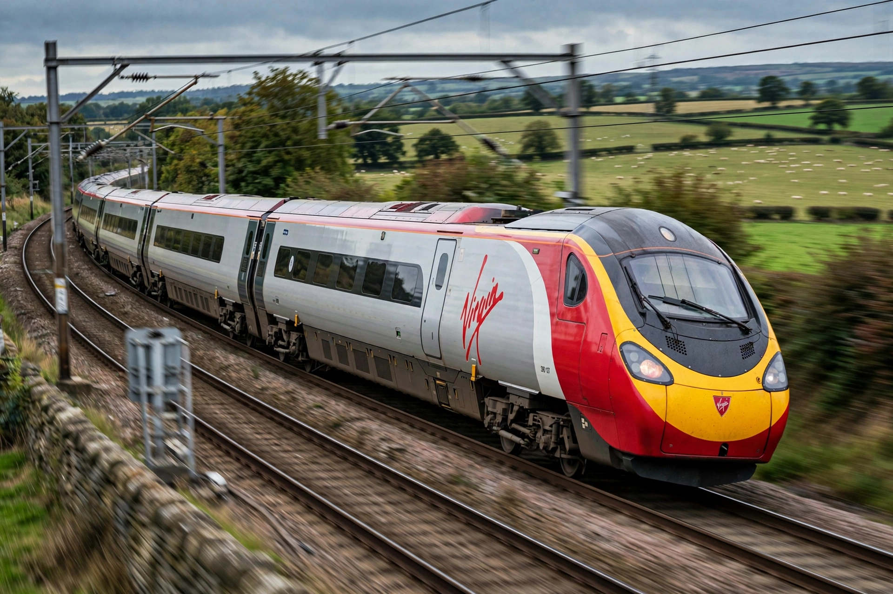

The British Rail Class 390 Pendolino is a type of electric multiple unit passenger train built by Alstom using Fiat tilting train technology, operated by Avanti West Coast on the West Coast Main Line.

Introduced by Virgin Trains 2002-2004 in 9-car sets, later extended to 11 cars. Tilting up to 8 degrees allows higher speed on curves. Grayrigg derailment 2007 involved a Pendolino.
London Euston to Birmingham, Manchester, Liverpool, Glasgow, Edinburgh. See Pendolino, West Coast Main Line.